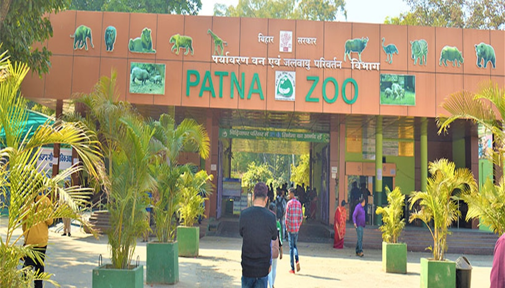
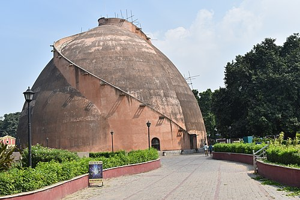
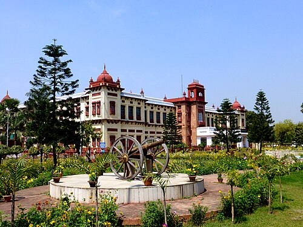
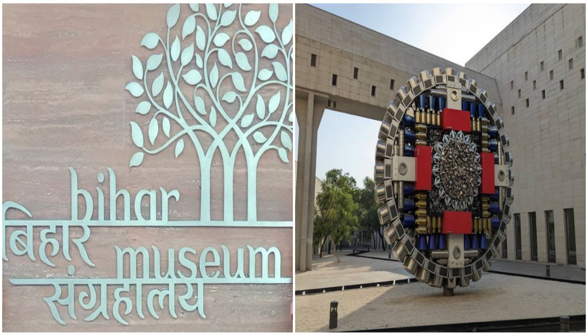
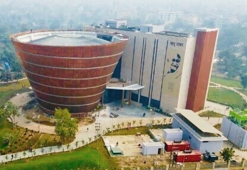
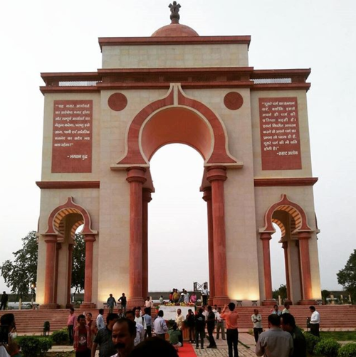
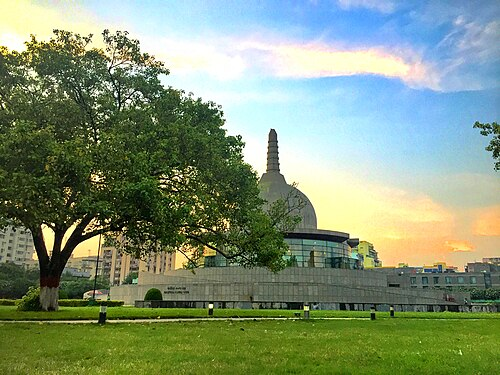
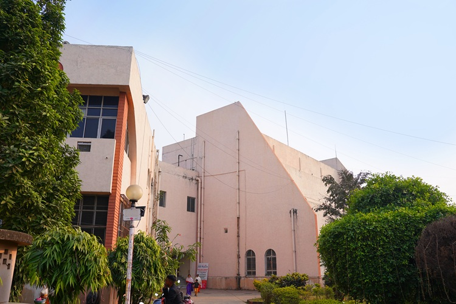
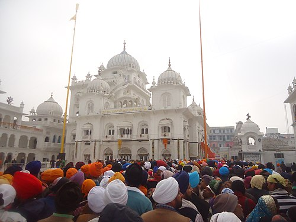

Discover the Best Places to Visit in Patna
Patna Zoo (Sanjay Gandhi Jaivik Udyan)
One of the largest zoos in India, home to diverse flora and fauna, and a popular destination for families and nature lovers. 
Golghar
A massive granary built in 1786, offering panoramic views of Patna from the top of its spiral staircase. 
Patna Museum
Established in 1917, it showcases ancient artifacts, paintings, and a fossil of a tree over 200 million years old. 
Bihar Museum
A modern museum celebrating Bihar's history, culture, and heritage with interactive galleries and exhibitions. 
Bapu Tower
A modern commercial complex known for shopping and its location on Frazer Road. Named in honor of Mahatma Gandhi. 
Sabhyata Dwar
A sandstone arch built in Mauryan style, representing the rich cultural history of Pataliputra. 
Buddha Smriti Park
A serene urban park featuring a meditation center and a large stupa, commemorating Lord Buddha's life. 
Patna Planetarium (Indira Gandhi Planetarium)
One of Asia's largest domed planetariums, offering astronomy shows and educational experiences for all ages. 
Patna Sahib Gurudwara
A revered Sikh shrine, birthplace of Guru Gobind Singh Ji, and a key pilgrimage site for Sikhs worldwide. 